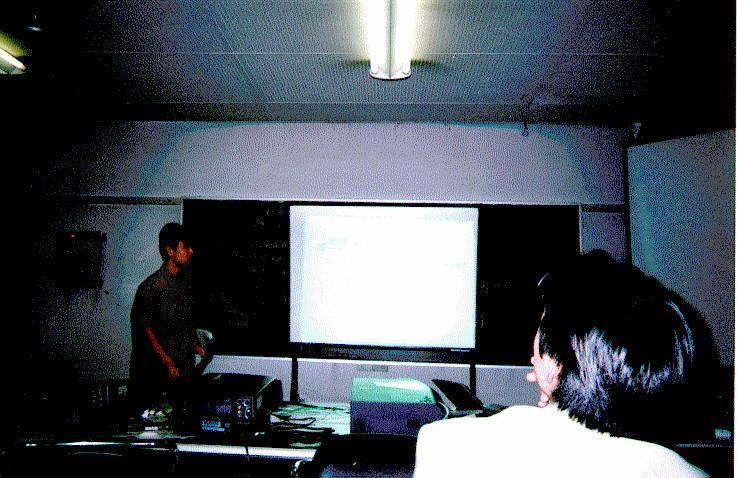

第 253 回 PTT のお知らせ
日時: 1999年10月27日 (水) 18:30 から
場所: 東京工業大学大岡山キャンパス 西7号館 204号室
話者： 栄純明(東工大)
題目： MPC++ Multi-Thread Template Library の MPI による実装と性能評価
概要：
並列言語 MPC++ は新情報処理開発機構で開発されたクラスタシステムソフ
トウェアである SCore 以外の環境では利用できなかった．我々はプラットホー
ムポータビリティのために，通信レイヤに MPI を用いて MPC++ を実装したが，
MPI の特性はプラットホーム毎に異なるため，性能の可搬性が問題となる．測
定の結果データサイズが 8Kbytes 以上の時には通信のオーバヘッドは無視で
きることが分かった．さらに Nas Parallel Benchmarks の CG カーネルベン
チマークでは，ノード数が少ないときには MPC++ on MPI で書かれたものが
MPI で書かれたものに性能面で迫る．しかしノード数が増加すると，ネットワー
ク性能の低いコモディティプラットホームでは性能が著しく低下するのに対し，
高速なネットワークを持つ MPP 上と，高性能なネットワークを持ったコモディ
ティプラットホーム上ではスケールした．この結果 MPC++ on MPI は高性能な
ネットワークを持ったプラットホーム上ではその有効性が確認できたが，コモ
ディティネットワークに対しては更なる最適化が必要であることが分かった．
第 253 回 PTTメモ
出席者:
並木美太郎(農工大),
石畑清(明大),
岩崎英哉(東大),
前田敦司,
山内斉,
岩村卓成(電通大),
下國治(川崎市),
小川宏高,
長谷川広和(東工大),
辻田裕一(日本原子力研究所),
佐々木崇郎(横浜市)
質疑応答:
- Q: 性能の可搬性とは？
- A: 「高性能計算」では、書かれたプログラムがいずれの並列
実行環境でも効率良く動作することを期待、というより、すで
に絶対的に必要としている。このような性質を「性能の可搬性」
と呼ぶ。
- Q: 一方のハードウェアに依存して一方では速く動くプログラムが他方
ではそうではない状況を「性能の可搬性が損なわれる」と呼ぶのでは
ないのか？
- A: その通り。プログラムの観点からすると一方でしか速く動
かないのでは困る。幸いコモディティとして普及しているPC、
NIC、スイッチの組み合わせによるクラスタシステムは、特別
な通信アーキテクチャを持たないがゆえに、一方に大きく依存
することはない。一般的に並列プログラムでは、通信やメソッ
ド起動について十分ネガティブな条件を考慮して書かれていれ
ば、ある程度の性能の可搬性を確保できる。
- Q: SR2201の性能低下がキャッシュ溢れというが、それはどこの？
- A: 各PEのL1キャッシュサイズが超えるときに、ちょうど性能
低下が顕在化する。
- Q: スループットの測定では連続にデータを書き込んでいるのか
- A: 非同期のread/writeなのでそうなる。
- Q: writeが非同期ならどの時点の時間を計ってスループット・レイテ
ンシを計算しているのか？
- A: 最初の非同期writeから、最後の非同期writeを発行後、同
期をとるまでの所要時間から求めている。
- Q: Remote InvocationレイテンシについてSR2201のパフォーマンスが
悪過ぎないか?
- A: SR2201はスループットは高いが、レイテンシが意外に大き
いということではないか。
- Q: クラスタ presto の名前の由来は?
- Q: M-VIA とは何でしょうか?
- A: NERSCによるLinux用VIAのフリーなインプリメンテーション
のこと。
- コメント:
32ポートのスイッチでも安いものは内部的に4ｘ4のスイッチをカスケー
ドして作られているので、パフォーマンスがでない。
- Q: ポートをいろいろ入れ替えて試してみたのか
- A: メルコ8ポートの方では試した限りでは、影響が見られなかっ
た。
- Q: 基本的にポーティングはMPIさえあればできるのか
- A: 通信部分はそうだが、ユーザレベルスレッドはsetjmp,
longjmpを使って実装する必要がある。しかし、setjmp,
longjmpが使えるOSであれば、実装の難易度は下がる。
- Q: UDPベースのMPICHなどを利用すれば速くなるのか。_pmttlプリミティ
ブで集団サポートすることで。
- A: 高速なPoint-to-Point通信があれば、もちろん高速化に繋
がる。MPC++ MTTLでは、例えばバリアは非同期writeを用いて
tree barrierを行っているため、_pmttlプリミティブを拡張し
ても恩恵が得られない。恩恵を得るためには、MTTLのテンプレー
トライブラリを変更する必要がある。
- Q: MPC++ Multi-Thread Template Library の可搬性は?
- A: C++のTemplateライブラリのみで構成されており、言語処理
系自体の拡張はないので可搬性がある。

発表の様子